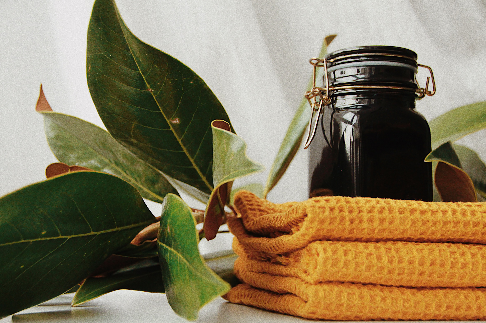

SEARCH
ACE
INVEST IN YOUR SKIN. IT IS GOING TO
REPRESENT YOU FOR A VERY LONG
TIME
Every person should learn to be their Own
Skincare expert
Skincare is the range of practises that support integrity, enhances its apperance,and relieve skin
conditions.They can include nutrition,avoidance of excessive sun

Honey Shampoo For Hair
According to Omolola Becca,the owner of Ace-cosmetics in Paris,"Natural
shampoo do not contain harsh detergent,that not only dry out the hair,but
can also cause overproduction of oil."

Castor Shampoo For Hair
According to Omolola Becca,the owner of Ace-cosmetics in Paris,"Natural
shampoo do not contain harsh detergent,that not only dry out the hair,but
can also cause overproduction of oil."